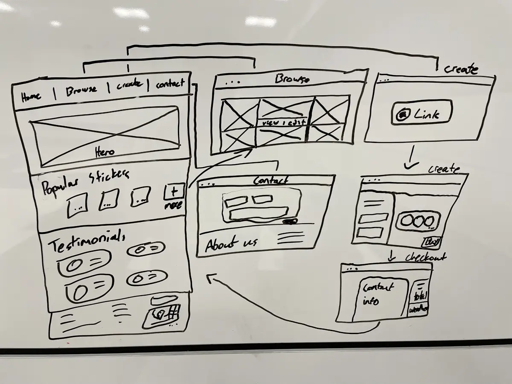
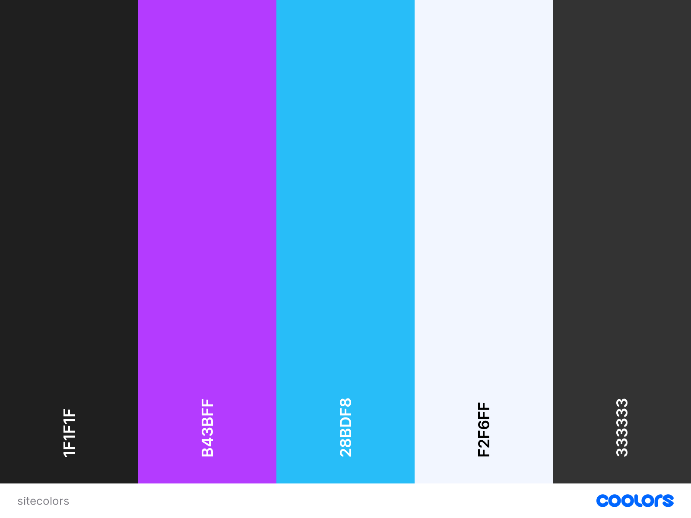

Site Plan
Site Purpose
A commerce site where users can create and purchase stickers customized to them based on their top albums and artists on spotify. The purpose is to provide a smooth user experience that feels very modern.
Target Audience
The target audience is anyone that listens to music! This site appeals to people that like to customize their belongings (laptops, watter bottles, etc.). This site also appeals to people to people looking to give personal gifts! Persona 1: A teenager who is really into music and wants a cool way to display their music taste and favorite artists. Persona 2: a young adult who has recently purchased a new laptop and wants something to put on the back of it to customize it. Since the majority of my target audience are young people, the design goals of my website will be to make it very modern looking and attractive to young people.
Site Map / Wireframes

Color Scheme
 The main theme will be a dark theme with almost black background. The purple and blue will form gradients that will accent important information or calls to action.
Typography
I will be using the google font Noto Sans in the 200 and 400 font weights. I picked this font because it's easy to read, has support for many font weights and languages, and fits with the modern feel of my website.